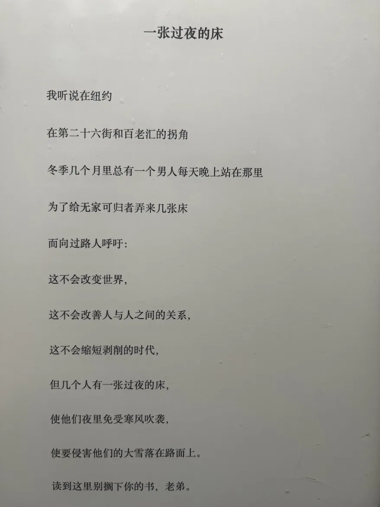
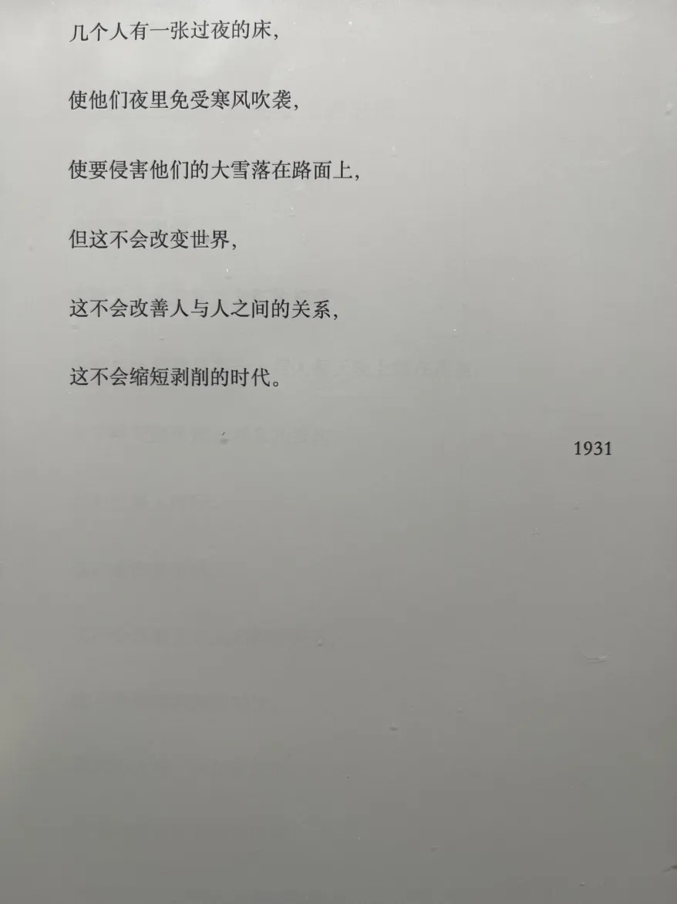
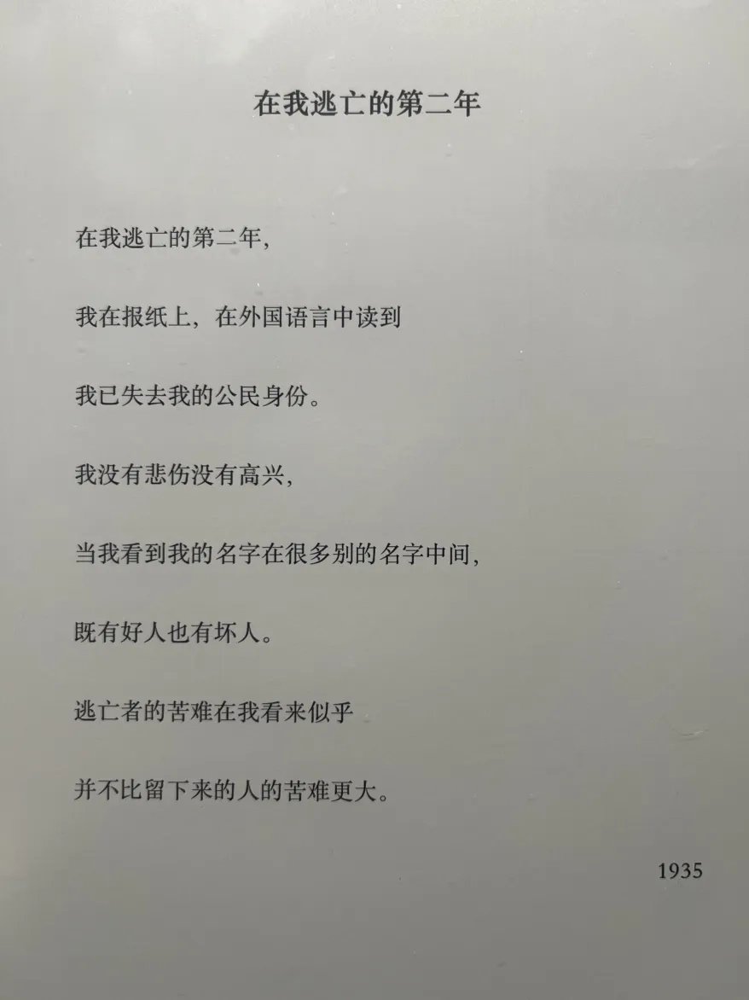
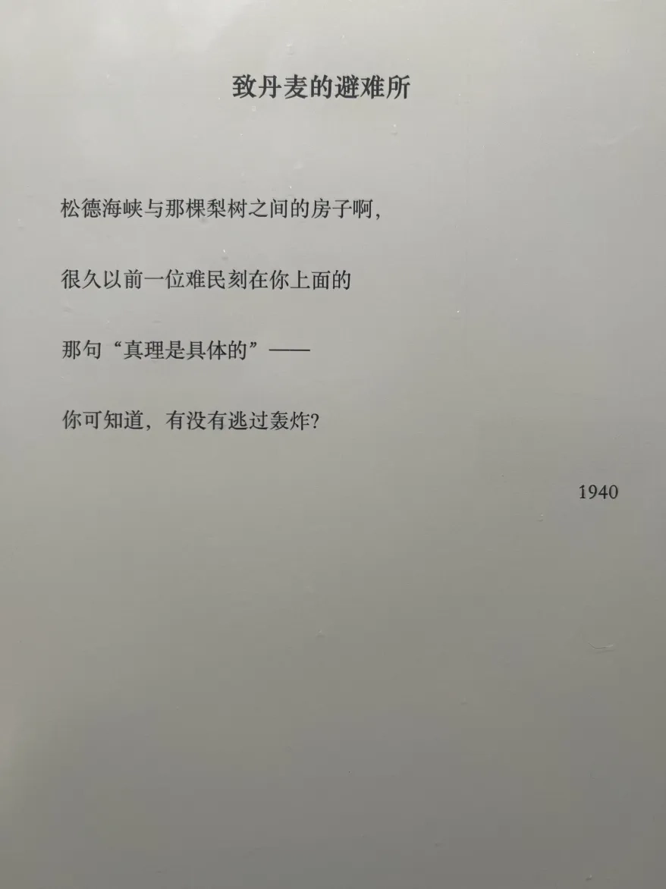

是的，我决定厚着脸皮跳过拖延着的去年 n 个月的月度总结以及年度总结，直接开始今年一月的总结！
书籍
《十年一觉电影梦》是导演李安以第一人称口述的方式，讲述自己电影生涯第一个十年的追梦历程。这不仅是一个坚持“理想不死”的电影人的成长告白，更是一部探究“如何面对磨难和荣耀”的自我对话。
美国《时代》周刊说，李安荣膺“全球最具影响力的艺术与娱乐人士”，当之无愧。
张艺谋说，在东西方世界里游刃有余地行走的导演，恐怕华语影坛里只有李安一人。
陈文茜说，李安终于跃上顶峰，成了东西方电影世界没有人可以忽视的导演。
站在荣耀的巅峰，李安却通过《十年一觉电影梦》告诉所有人，他眼中的自己，是“一个没用的人”：
他，两次高考落榜，却意外步入舞台生涯；
他，在纽约名校高分毕业后，遭遇“毕业即失业”；
他，在美国煮饭、带孩子，做全职“家庭煮夫”，整整六年；
人往四十岁走，他才华满腹，却只能在剧组守夜看器材，扛沙袋，做苦力。他“不好意思再谈什么理想”，却不知理想已深埋心底。
李安活得很明白。他说，我真的只会当导演，做其他事都不灵光。
《十年一觉电影梦》，讲述一个导演的自我修养，一个男人的征服与温存。
2024 年看完的第一本书，一口气读完，感觉蛮奇特的。我一直非常喜欢李安的电影，对他也有几分吃了鸡蛋忍不住去好奇母鸡的心情。这本书确实满足了我的好奇心，李安也算是很诚恳的讲述者，不仅把自己的身世背景真诚交代，也对创作过程非常坦诚。但这本书在解答了一些电影没有给出信息的问题之外，其实也不免破坏了作者和读者之间的界限。也许完整的作品不必作者画蛇添足地额外解释，也许对文艺创作者，还是欣赏作品最好。
中国历史典籍浩如烟海，常使初学者不得其门而入。作者倡导“大历史”（macro-history），主张利用归纳法将现有史料高度压缩，先构成一个简明而前后连贯的纳领，然后在与欧美史比较的基础上加以研究。本书从技术的角度分析中国历史的进程，着眼于现代型的经济体制如何为传统社会所不容，以及是何契机使其在中国土地上落脚。
为什么称为“中国大历史”？中国过去150年内经过人类历史上规模最大的一次革命，从一个闭关自守中世纪的国家蜕变而为一个现代国家，影响到10亿人口的思想信仰、婚姻教育与衣食住行，其情形不容许我们用寻常尺度衡量。
大学时看过，如今全忘了，2023 年再从图书馆借阅，像是看一本新书，但时而有种淡淡的熟悉。有趣的是， 2023 年我也看了一些其它的历史书，大概因为不是这种几千年的通史、又出得晚近，颇驳斥了这本书的一些观点。从不同年代写就的不同的书里看到对同一话题的不同观点，这样的阅读体验也很有趣。但就这本书而言，我不会推荐。它虽然语言非常中国（应该是作者自己亲自润色的中文版？），但内容明显是为了美国（对中国历史没有什么了解的）普通读者而写，很多比喻对本中国读者来说反而有点摸不着头脑。再加上书写得早，我觉得应该会有更适合中国读者的简明的中国通史吧。
我有一个愿望，想写一写妈妈或祖母，很久以前生活在这片土地上的女性的故事。
一部女性版的《活着》，四代女性的友谊、抗争、泪水与欢笑
韩国最大网络书店22万读者票选“2021年度之书”
第29届大山文学奖获奖作，天才作家崔恩荣首部长篇小说！
女人们不再是仅供同情、怜悯的角色，也不再是装饰男人壮丽生活的配角。
她们是自己，生如草芥，彼此搀扶，尽全身之力对抗荒诞的时代。
-------------------
和丈夫离婚后，三十一岁的我独自来到海边小城熙岭，却在那里邂逅多年未见的祖母。尴尬和沉默之后，孤独的心一点点靠近，我和祖母成为相互倾吐心声的朋友。在祖母家老屋的旧相册里，我发现一位和我长相非常相似的女子，依偎在少女时代的祖母身旁。
一个个鲜活的面孔逐渐从一张张黑白相片中，从一封封感人至深的书信中，从久远的回忆里，穿过女人生如飘萍、命如草芥的时代，走到我面前。
经过曾祖母、祖母和母亲，来到我身边的故事，
她们的人生在我的眼前重现。
现在的我能够触及她们吗?
正如过去无数的我组成了现在的我，
现在的我也能见到过去的无数个我吗？
一口气看完，真的非常好看。刚开始我甚至以为是作者自传，写得那么平实不做作，闪光的地方动人得那么自然。不过后面能看出是小说。女性意识非常动人，不过看得出来那是年轻一代的女性才会有的觉醒。我非常喜欢！韩国女作家太了不起了！
每天陪伴我们的食物和料理，你知道它们背后有多少故事吗？
你知道像土豆、盐、砂糖等等这些生活里微不足道的食材都曾极大地影响过人类的历史进程吗？
日本知名学者和畅销书作家宫崎正胜从世界史的大框架出发，通过平常可见的各种食材和料理，以全球性的宏大视角为我们讲述人类文明、文化的交流与变化的过程，继《酒杯里的世界史》之后，再次带我们进入一个知识冒险的乐园。
编辑推荐：
★日本人气历史作家、NHK“世界史”全职讲师、知名学者宫崎正胜力作，在日本长销十年、年年加印的历史类通识读本。
★你不可不知的美食百科，让你成为一个真正的“深度吃货”。
★从最初寻找人类可用的食材，到全球食材的大交换，再到食物的过剩与危机，这些纷繁复杂的变动背后，既是人与自然生存博弈的体现，也是人类认识自我的漫长过程。
日本学者写的食物史科普，很容易读，不过对我这种没有相关知识储备的人来说可能只能是走马观花，所以意外地（？）很适合我。虽然只留下了一些碎片但我估计也只能得到一些碎片，比如鞑靼肉排，比如古中国对古日本饮食的印象，大航海怎么影响了全世界，近代科技发展对平民食物的改变等。
本书从社会发展、人口变迁以及女权运动等方面，探讨了法国19—20世纪堕胎问题的发展历程。作者汇集各方人士的观点，反映了不同社会阶层、不同性别、不同文化立场者对堕胎问题的迥异看法。通过对这一涉及社会、政治、经济、文化及伦理问题的特殊事件的全面讨论，从一个侧面再现了当时法国乃至整个欧洲的社会状况。
似乎是我去年在 Anna’s Archive 搜别的关于女性妊娠终止权的书时顺便下载的，但意外地很有意思。这本书梳理了法国堕胎权的历史，也带到了欧洲背景的堕胎史。翻译似乎偶有难以理解的地方，也可能是我对法国历史背景知识比较欠缺所致。记忆比较深刻的点有：
-
最开始对堕胎的谴责是出于宗教原因：堕胎使得胎儿失去了出生受洗礼而有资格上天堂的机会；
-
19 世纪法国卷入战争后堕胎/出生率下降被舆论塑造成了关乎国家存亡的大罪。果然爱国主义是流氓最后的庇护所；
-
堕胎的流行取代了当时法国乡村还有的杀婴行为。23 年初国内讨论过一阵子我国蔓延千年的杀（女）婴/性别筛选“习俗”，还有过几场各国学者参与的线上讨论会。当时其它国家的学者都表示自己国家历史上并没有这样的“习俗”，我还疑惑为什么。看到这本书说历史中法国也有过杀婴的行为，想来把婴儿视作“人”也并不是自古以来的普世价值；
-
直到 20 世纪初，法国还禁止孕妇寻求（非婚生）胎儿生父，因为没有亲子鉴定手段，怕女人污蔑男的；
-
法共搅屎棍！根本不关心女性的权益而只关心堕胎权议题能不能从阶级角度推进。当有女性权益拥护者试图以非阶级论的角度推进堕胎权立法，法共反而诸多阻挠；
-
马尔萨斯主义者民族主义者法官医生等各方势力在这个议题角力百年，但一直到这几十年女性才得到对这个话题的话语权。在那之前，各方都是出于自己的利益（阶级问题/民族存亡问题/法官的自主权/医生职业的权威，等）在争论堕胎问题，但对这个议题利益最攸关的女性，却一直被沉默着。
总而言之，这本书对于了解“堕胎”这个议题在历史里如何演变，最后成为今天这样，很有帮助。尤其是各方在这个议题里常常诉诸历史、习俗、社会伦理等，而这本书里写到的关于堕胎真正的历史，当时严苛的法律背后又是有怎样（实际上并不属于道德范畴的）实际考量，对我们思考今天的问题也很有启发。
《致后代：布莱希特诗选》完整呈现出布莱希特诗歌创作全历程，为国内首次全面译介。
布莱希特是“史诗剧”的创立者。但他作为诗人的地位一点也不比作为剧作家的地位低。奥登就非常推崇作为诗人的布莱希特，仅凭布莱希特已出版的少数诗歌，就把他列为影响自己的十多位诗人之一。
布莱希特以朴素语言，平民视角，以及社会关注，对所处的时代和生活其中的人类状况做出生动的反应，创造了全新的政治诗歌。
在他的诗中，抒情完全消匿于诗的宗旨背后，这种现代诗，被视为德语诗歌语言的伟大革新，已成为当代德语诗歌极其重要、无所不包的典范。
甄选布莱希特各个时期的代表作，呈现其诗歌创作全历程：早期诗和早期城市诗（1913—1925），城市诗（1925—1929），危机时期（1929—1933），流亡初期（1934—1938），最黑暗的年代（1938—1941），美国时期（1941—1947），以及后期诗（1947—1956）。
人在痛苦的时候可以借书籍避难；人在灵魂被撕碎的时候，就可以读诗了。这本应该是我去年看到海报上那首《这是人们会说起的一年》后去找的。可能因为时代背景或者语言隔阂，前半本我并没有很多共鸣。但当诗的时间流过作者在战乱里逃亡的年份，客居异乡的年份，这些诗句突然变得太触动人心。




以韩国男性为第一视角的女性小说，每一句都太典了！
·
★是这个世界让我成为了女性主义者——比《82年生的金智英》更进一步，超高讨论度的韩国女性小说。
荣获韩国教保文库年度小说，入选韩国文化艺术委员会推荐好书。版权售出中、日、泰、越、印、俄等多国，引发东亚读者强烈共鸣。
★太真实了！扑面而来的熟悉感！——用普通男性视角看待女性主义，以赤诚坦率捕捉荒诞现实。
我做错了什么？为什么被骂？是在影射所有男人吗？女人为什么变成这样？无奈揭开男性与女性看到的貌似相同却截然不同的现实。
★所有的女人，都是她！是女友、是妻子、是母亲，但也是我自己。
以女性对女性的强力共情与支持，挣脱束缚，挑战偏见，打破冷漠。本书献给所有“开了天眼”、仍在战斗的女性。
·
分开多年后，金胜俊再次与前女友相遇。这是命运给的第二次机会，他们以虽然有些奇怪的方式复合，却很快恢复了恋人关系。可是在日渐升温的相处中，金胜俊发现，当年不谙世事的温柔、贤惠女孩如今已变成一位独立、成熟、清醒的女性主义者，这些年究竟发生了什么？平复下来掺杂震惊与好奇的心情，没关系，胜俊心想只要发动“好男人”攻势，一定可以让女友回到当初，随后他们会顺利结婚、生育、建立家庭。可谁料到，在接连产生的矛盾与冲突中，没有一件事情按照他的想象发展......
一月看的最糟糕的一本，不推荐给任何人。低配版的《八二年的金智英》，作者笔力不够，但踩热点议题的心又过分明显。凭着几个流量短视频般的情节是凑不成一本有意义的小说的。本来“激进女权主义者，但是异性恋”这样的设定是有非常多且深刻的东西可以写，然而作者隔靴搔痒地罗列了几个网络爆点式情节、莫名其妙的性相关情节之后，什么也没说清楚。没有一个人物是活的，全都只是演出流量热点的工具人。这本可以很明显地让人感受到为什么说人物才是小说的核心而不是情节。
音乐
真的想见你, song by 李玟
 https://www.youtube.com/watch?v=UZwq-dCbxSM
https://www.youtube.com/watch?v=UZwq-dCbxSM